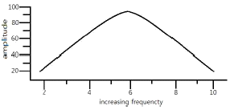
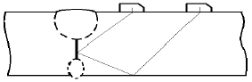
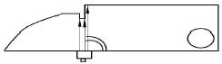
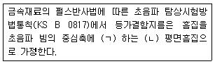

초음파비파괴검사기사(구) (2012-03-04 기출문제)
1과목: 초음파탐상시험원리
1. 두께 40mm인 강 시험체를 수침법으로 수직탐상하고자 한다. 물간거리 10mm일 때 탐상기의 화면에 초기 에코를 제외하고 2번째로 나타난 에코는 어디에서 반사한 것인가? (단, 수중의 초음파 속도는 1500m/s, 강에서의 초음파 속도는 6000m/s, 탐상기 측정범위는 500mm, 초기 에코는 화면의 영점에 맞추어져 있으며, 시험체 내부에는 결함이 없는 것으로 한다.)
- 제 1회 저면 반사파
- 제 1회 표면 반사파
- 제 2회 시험체의 저면 반사파
- 제 2회 표면 반사파와 제 1회 저면 반사파가 동시에
(정답률: 알수없음)

2. 얇은 수정판에 일정 전압을 가하였을 때의 현상으로 옳은 것은?
- 열이 나서 쉽게 파괴된다.
- 아무 변화도 안일어난다.
- 두께 방향으로 고주파 진동이 일어난다.
- 두께 반대 방향으로 저주파 진동이 일어난다.
(정답률: 알수없음)
3. 그래프에서와 같은 주파수 응답으로 볼 때 이 탐촉자의 대략적인 밴드(Band) 폭은?

- 1MHz
- 4MHz
- 6MHz
- 9MHz
(정답률: 알수없음)
4. 초음파 탐상검사를 할 때 감도와 분해능을 줄이기 위한 조치사항으로 볼 수 없는 것은?
- 표면을 매끈하게 한다.
- 탐상기의 게인을 올린다.
- 고주파수의 탐촉자를 사용한다.
- 초음파 출력이 높은 탐촉자를 사용한다.
(정답률: 알수없음)
5. 음향 임피던스가 서로 다른 두 재질의 경계면에 초음파를 입사시켰을 경우 나타나는 현상으로 옳은 것은?
- 모두 굴절된다.
- 입사한 초음파는 모두 흡수한다.
- 입사한 초음파는 모두 반사한다.
- 일부는 투과하고 일부는 반사한다.
(정답률: 알수없음)
6. 재료 내부에 타원형의 결함이 발생하였다. 초음파탐상 결과 긴 직경이 5mm, 짧은 직경이 3mm 일 때 응력집중계수(α)는 얼마인가?
- 1.6
- 3.3
- 4.3
- 16
(정답률: 알수없음)
7. 비파과검사를 이상적으로 수행하기 위한 전제조건과 관계가 먼 것은?
- 검사에 소요되는 비용을 정확히 알아야 한다.
- 피검사 부위가 비파괴검사 적용이 가능해야 한다.
- 제조방법에 따른 발생기능 결함상황을 알아야 한다.
- 결함이 피검물의 성능에 미치는 영향을 알아야 한다.
(정답률: 알수없음)
8. 비파괴검사법으로 볼 수 없는 것은?
- 자분탐상시험
- 인장강도시험
- 중성자투과시험
- 초음파탐상시험
(정답률: 알수없음)
9. 자기이력곡선(Hysteresis loop)은 무엇을 나타내는가?
- 누설자속의 크기
- 강자성체의 강도
- 검사품의 자기적 특징
- 검사품의 재질과 용도
(정답률: 알수없음)
10. 방사선투과시험의 장점과 거리가 먼 것은?
- 내부결함의 검출이 가능하다.
- 물질의 큰 조성 변화 검출이 가능하다.
- 검사결과를 거의 영구적으로 기록할 수 있다.
- 방사선 빔 방향에 평행한 판형결함의 검출이 용이하다.
(정답률: 알수없음)
11. 침투 탐상제를 이용한 누설시험에서 일반적인 침투탐상시험과 달리 포함되지 않아도 되는 탐상 절차는?
- 전처리
- 침투처리
- 세척처리
- 현상처리
(정답률: 알수없음)
12. 비파괴검사법 중 침투탐상시험만의 단점인 것은?
- 숙련이 필요하다.
- 전처리가 필요하다.
- 표면이 열려 있는 결함이어야만 검출할 수 있다.
- 표면이 거칠거나 다공성인 경우는 검사가 어려워 진다.
(정답률: 알수없음)
13. 외경 30mm, 두께 2.5mm인 튜브를 직경 20mm인 코일이 감겨있는 내삽형 탐촉자로 와전류탐상시험 할 때, 충전율(fill factor)은 얼마인가?
- 0.44
- 0.64
- 0.67
- 0.80
(정답률: 알수없음)
14. 비자성체의 표면 및 표면 직하 결함을 포면개구 여부에 관계없이 검출하고자 할 때 가장 적합한 비파괴검사 방법은?
- 자분탐상시험
- 침투탐상시험
- 음향방출시험
- 와전류탐상시험
(정답률: 알수없음)
15. 초음파탐상시험에 사용되는 탐촉자의 진동자 재질 중 티탄산바륨 탐촉자의 단점으로 옳은 것은?
- 물에 녹는다.
- 내마모성이 낮다.
- 송신효율이 나쁘다.
- 화학적으로 불안정하다.
(정답률: 알수없음)
16. 나열된 코일 중에서 사용 용도가 서로 다른 한가지는?
- 관통형 코일
- 평면형 코일
- 내삽형 코일
- 직류여자 코일
(정답률: 알수없음)
17. 와전류탐상시험으로 탐상이 곤란한 것은?
- 파이프의 균열
- 재료의 전기전도도
- 박판에서 부식에 의한 두께 변화
- 자성체에서의 자구(magnetic domain)의 배열 상태
(정답률: 알수없음)
18. 발포누설검사법(bubble test)의 장점이 아닌 것은?
- 큰 누설을 쉽게 찾을 수 있다.
- 누설부위의 직접검출이 가능하다.
- 시험이 간단하며 비용이 저렴하다.
- 작은 결함에 대한 감도가 가장 우수하다.
(정답률: 알수없음)
19. 방사선 투과시험과 비교한 초음파 탐사시험의 장점과 거리가 먼 것은?
- 시험체 두께에 대한 영향이 적다.
- 미세한 균열성 결함의 검사에 유리하다.
- 결함의 형태와 종류를 쉽게 알 수 있다.
- 한쪽 면에서만 접근할 수 있어도 탐상이 가능하다.
(정답률: 알수없음)
20. 영구자석을 사용한 극간형(yoke type) 자분탐상시험범의 주된 장점으로 옳은 것은?
- 자력이 수시로 바뀐다.
- 탈자가 요구되지 않는다.
- 어떤 시험체에도 적용이 용이하다.
- 전력(eletric power)이 요구되지 않는다.
(정답률: 알수없음)
2과목: 초음파탐상검사
21. 경사각 탐촉자에는 각도가 표시되어 있는데 이에 대한 설명이 맞는 것은?
- 입사각을 기입한 것이다.
- STB-A1 시험편에 의한 굴절각을 기입한 것이다.
- 알루미늄, 강, 동에 대한 굴절각을 기입한 것이다.
- 스테인리스 합금재에 대한 굴절각을 기입한 것이다.
(정답률: 알수없음)
22. 두께가 같은 2개의 판재를 수직탐상한 결과 1개는 저면 에코의 다중반사 횟수가 많았고, 다른 하나는 수회만 나타났다. 후자의 재료로 옳은 것은?
- 감쇠가 큰 재료.
- 음속이 느린 재료.
- 결정입자가 미세한 재료
- 라미네이션이 있는 재료.
(정답률: 알수없음)
23. 용접부의 초음파탐상검사에서 용접선이 평행한 방향으로 놓인 불연속이 검출되어 결함의 지시길이를 dB drop법으로 결정하려 할 때 가장 바람직한 주사방법은?
- 전후 주사
- 진자 주사
- 좌우 주사
- 목돌림 주사
(정답률: 알수없음)
24. STB-G V15-5.6 표준시험편의 평면바닥구멍(FBH)으로 화면의 90%에 반사에코를 얻었다. 이 감도로 STB-G V15-2.8의 평면바닥구멍으로 화면의 몇 %의 에코를 얻을 수 있는가?
- 22.5%
- 45%
- 50%
- 60%
(정답률: 알수없음)
25. 그림과 같이 A-스캔에서 날카로운 형태의 에코를 나타내고, 탐촉자를 좌우로 움직일 때에 진폭이 일정한 구간에서는 거의 변화가 없거나 약간 변화하고, 전후로 진폭이 부드럽게 변하는 경우 결함의 종류로 옳은 것은?
- 복수결함
- 단일 정상 결함
- 크고 평활한 반사체
- 크고 불규칙한 반사체
(정답률: 알수없음)
26. 펄스반사법에서 직접접촉법과 비교한 수침법의 장점은?
- 휴대성이 양호하다.
- 빔의 침투력이 감소가 적다.
- 전달손실의 영향을 최소화 할 수 있다.
- 물거리를 측정하지 않아 간단히 탐상할 수 있다.
(정답률: 알수없음)
27. 탐촉자 2개로 송/수신(pitch-catch)하여 결함을 탐상하는 방법 중 그림과 같이 탐촉자를 배열하여 검사하는 방법은?

- 탠덤탐상법
- V반사 탐상법
- K반사탐상법
- 표면파탐상법
(정답률: 알수없음)
28. 종파 경사각 탐촉자에 관한 설명으로 틀린 것은?
- 종파뿐만 아니라 횡파 또한 전파하므로 일반 강재 등의 검사에 적용하면 횡파에 의한 에코도 CRT 상에 나타나기 때문에 결과의 해석이 어렵다.
- 종파 경사각 탐촉자를 이용하여 용접부를 검사하는 경우 1회 반사법을 적용하여 한다.
- 입사각이 종파의 임계각보다 작도록 하여 시험체에 종파가 굴절 전파하도록 제작된 탐촉자이다.
- 재료 조직의 영향에 의한 임상 에코가 큰 경우 횡파 경사각탐촉자를 대신하여 사용된다.
(정답률: 알수없음)
29. 탐상면으로부터 100mm 떨어져있는 직경 3mm의 원형평면 결함을 가공한 대비시험편을 이용하여 대비시험편 내의 결함으로부터 에코 높이가 25%가 되도록 감도조정을 하였다. 동일한 탐상감도로 시험체를 탐상하여 빔거리 50mm의 위치에서 100% 높이의 결함 에코가 검출되었다면 결함의 직경은 몇mm인가? (단, 검출한 결함은 초음파 빔의 중심축에 수직한 원형평면 결함이며, 재료의 산란, 흡수 등으로 인한 감쇠는 고려하지 않는다.)
- 1.5mm
- 3mm
- 6mm
- 9mm
(정답률: 알수없음)
30. 다음 그림은 탐촉자의 무엇을 측정하는 것인가?

- 굴절각
- 분해능
- 감도
- 거리
(정답률: 알수없음)
31. 분산각도가 가장 작은 초음파 빔(beam)의 지향특성을 갖는 것은?
- 높은 주파수와 큰 지름의 탐촉자 사용 시
- 낮은 주파수와 큰 지름의 탐촉자 사용 시
- 높은 주파수와 작은 지름의 탐촉자 사용 시
- 낮은 주파수와 작은 지름의 탐촉자 사용 시
(정답률: 알수없음)
32. 진동자의 설게 시 분해능이 가장 좋은 경우는? (단, Q는 공진주파수에서 강도의 증가를 나타낸다.)
- 펄스폭이 작고 댐핑상수(δ)가 커야 한다.
- Q값과 대역폭(band width)이 커야 한다.
- 펄스 폭이 크고 댐핑상수(δ)가 작아야 한다.
- Q값은 크고 대역폭(band width)은 작아야 한다.
(정답률: 알수없음)
33. 공칭굴절각인 70°인 탐촉자로 STB-A1 시험편을 이용하여 굴절각을 확인하고자 할 때 빔 진행거리(W)가 60mm이면, 이 탐촉자의 실측 굴절각은?
- 60.0°
- 68.4°
- 69.3°
- 77.0°
(정답률: 알수없음)
34. 진동자의 특성에 대한 설명 중 옳은 것은?
- 펄스 폭은 진동자에 (-)전극을 걸어서 조절한다.
- 펄스 폭이 크면 감도는 낮아지고 분해능은 증가한다.
- 펄스 폭이 크면 펄스의 지속시간이 짧아져서 분해능이 좋아진다.
- 펄스 폭이 좁으면 탐촉자와 가까이 있는 표면 근방의 결함검출에 좋다.
(정답률: 알수없음)
35. 초음파탐상기에 요구되는 성능 중 이것이 나쁘면 정확한 에코 높이가 얻어지지 않아 결함을 과대 또는 과소 평가하게 되는 성능을 나타내는 용어는?
- 분해능
- 증폭 직선성
- 시간축 직선성
- 입사점 측정
(정답률: 알수없음)
36. 초음파탐상기를 이용하여 두께 측정을 할 때, 초기 조정을 필요로 하는 내용과 거리가 먼 것은?
- 영점 조정
- 편각 조정
- 게인 조정
- 측정물과 동일 재질의 두께를 알고 있는 시험편으로 시간축을 조정
(정답률: 알수없음)
37. 최소 탐상거리를 의미하며 주로 탐촉자를 포함한 탐상기의 성능 표시용으로 쓰이는 것은?
- 게인
- 불감대
- 증폭직선성
- 원거리 분해능
(정답률: 알수없음)
38. 초음파탐상검사에서 검출 결함의 판정 시, 요구되는 평가 인자와 거리가 먼 것은?
- 시험체 제조과정
- 초음파 전파특성
- 금속재료학적 지식
- 탐촉자 구조 및 제조일
(정답률: 알수없음)
39. 압연제품이나 단강제품과 비교 시 주조제품을 탐상할 때 주조제품에 주로 많이 발생하는 에코는?
- 임상 에코
- 저면 에코
- 표면 에코
- 고스트 에코
(정답률: 알수없음)
40. 경사각탐상 시 두갈래 (straddle scanning)를 이용할 때 송신 탐촉자와 수신 탐촉자의 각도로 옳은 것은?
- 45°
- 60°
- 100°
- 180°
(정답률: 알수없음)
3과목: 초음파탐상관련규격및컴퓨터활용
41. 압력용기용 강판의 초음파 탐상검사방법(KS D 0233)에서 수직법에 의한 펄스 반사법으로 탐상하고자 할 때 단일 진동자 수직탐촉자로 검사할 대상이 아닌 강판의 두께는?
- 10mm
- 20mm
- 30mm
- 60mm
(정답률: 알수없음)
42. 초음파 펄스 반사법에 의한 두께 측정방법(KS D ⑤36)에서는 초음파 두께 측정 장치를 적어도 6개월마다 정기적으로 점검하고 그 결과를 기록하도록 규정하고 있는데 이 때 점검하여야 할 점검항목이 아닌 것은?
- 오차측정
- 육안점검
- 측정 하한의 측정
- 포시치 흐트러짐 폭의 측정
(정답률: 알수없음)
43. 강 용접부의 초음파 탐상시험방법(KS B 0896)에서 규정하고 있는 탠덤 탐상의 적용 가능한 최소 판두께는?
- 10mm
- 20mm
- 30mm
- 40mm
(정답률: 알수없음)
44. 보일러 및 압력용기에 대한 표준초음파탐상검사(ASME Sec.V.Art 23 SA-388)에 따라 오스테나이트 스테인리스강 단강품을 검사하는 경우 펄스에코 초음파탐상기에 사용되는 주파수는 얼마 이하에서 작동되어야 하는가?
- 5MHz
- 2.5MHz
- 1MHz
- 0.4MHz
(정답률: 알수없음)
45. 초음파 탐상장치의 성능측정방법(KS B ⑤34)에서 규정하고 있는 수직탐촉자의 근거리 분해능 측정에 사용되는 시험편은?
- RB-RA
- RB-RB
- RB-RC
- RB-RD
(정답률: 알수없음)
46. 보일러 및 압력용기에 대한 초음파탐상시험(ASME Sec.V.Art4)에 따라 곡률이 508mm(20인치)이하인 시험대상물을 검사하기 위해 곡률 254mm(10인치) 인 기본교정시험편을 제작하였다. 이 시험편을 사용하여 검사할 수 있는 시험대상물의 곡률반경범위로 적합한 것은?
- 229mm(9인치) 이상 381mm(15인치)이하의 곡률을 가진 것은 검사 가능하다.
- 229mm(9인치) 미만의 곡률을 가진 것은 검사 가능하다.
- 381mm(15인치) 초과하는 곡률을 가진 것은 검사 가능하다.
- 381mm(15인치)초과하고 508mm(20인치) 미만인 것은 검사가능하다.
(정답률: 알수없음)
47. 보일러 및 압력용기에 대한 초음파 탐상검사(ASME Sec.V.Art 4)의 일반적인 시험요건 중 진동자 치수의 최소 중접 면적은?
- 5%
- 10%
- 15%
- 20%
(정답률: 알수없음)
48. 보일러 및 압력용기에 대한 재료의 초음파탐상시험(ASME Sec.V.Art5)에 따르면 펄스 에코 초음파 장비는 게인 조절기를 몇 dB이하로 조정할 수 있는 장비를 갖추도록 규정하는가?
- 2
- 5
- 10
- 20
(정답률: 알수없음)
49. 보일러 및 압력용기에 대한 초음파탐상시험(ASME Sec.V.Art4)에서 관경20인치 이하의 곡률을 가진 모든 시험체를 완전히 적용할 수 있게 하려면 곡률이 다른 곡면대비시험편은 최소 몇 개를 만들어야 하는가?
- 4개
- 5개
- 6개
- 8개
(정답률: 알수없음)
50. 강관의 초음파 탐상검사방법(KS D 0250)에서 규정하고 있는 일반적인 요구사항으로 옳은 것은?
- 관은 검사의 유효성에 관계없이 관이 휘어 있으면 안 된다.
- 전부제조공정을 끝마친 관에 대하여 초음파 탐상검사를 실시한다.
- 검사시기에 대하여 별도 협정이 없는 경우에는 검사자가 선택한 공정으로 실시한다.
- 전부제조공정이라 함은 초음파 특성이나 관의 형상을 변화시키지 않는 공정을 말한다.
(정답률: 알수없음)
51. 강 용접부의 초음파 탐상시험방법(KS B 0896)에 의한 흠 에코 높이의 영역과 흠의 지시 길이에 따른 흠의 분류 방법 중 Ⅳ영역에 판 두께 18mm 이하의 경우 3류 결함은 몇 mm 이하인가?
- t/4 mm 이하
- t/3 mm 이하
- 5mm 이하
- 9mm 이하
(정답률: 알수없음)
52. 보일러 및 압력용기에 대한 초음파탐상시험(ASME Sec.V.Art4)에 따른 접촉매질에 관한 설명으로 옳은 것은?
- 티타늄에 사용되는 접촉매질은 황(S)의 함량이 250ppm을 초과해서는 안 된다.
- 니켈합금에 사용되는 접촉매질은 인(P)의 함량이 250ppm을 초과해서는 안 된다.
- 탄소강에 사용되는 접촉매질은 할로겐 화합물의 함량이 250ppm을 초과해서는 안 된다.
- 오스테나이트계 스테인리스강에서 사용되는 접촉매질은 할로겐 화합물의 함량이 250ppm을 초과해서는 안 된다.
(정답률: 알수없음)
53. 강 용접부의 초음파 탐상시험방법(KS B 0896)에 따라 강 용접부의 두께 6mm에 따라 강 용접부 두께 6mm를 탐상하고자 한다. 전원전압의 변동에 따라 탐상기의 감도변화와 세로 축 및 시간축의 이동량은 다음 중 어느 범위내까지 허용되는가?
- 감도변화는 ±1dB, 세로축 및 시간축 이동량은 풀 스케일의 ±1%
- 감도변화는 ±1 dB, 세로축 및 시간축 이동량은 풀 스케일의 ±2%
- 감도변화는 ±2dB, 세로축 및 시간축 이동량은 풀 스케일의 ±1%
- 감도변화는 ±2dB, 세로축 및 시간축 이동량은 풀 스케일의 ±2%
(정답률: 알수없음)
54. 다음 중( ) 안에 들어갈 용어가 적절히 나열된 것은?

- ㉠ 평행 ㉡ 원형
- ㉠ 직교 ㉡ 원형
- ㉠ 평행 ㉡ 장방형
- ㉠ 직교 ㉡ 장방형
(정답률: 알수없음)
55. 금속재료의 펄스 반사법에 따른 초음파 탐상시험방법통칙(KS B 0817)에 의거 탐상 도형을 표시하는 기본 기호가 바르게 연결된 것은?
- 송신펄스 : T, 흠집에코 : F, 바닥면 에코 : B, 표면에코 : S, 측면 에코 : W
- 송신펄스 : T, 흠집에코 : D, 바닥면 에코 : B, 표면에코 : S, 측면 에코 : W
- 송신펄스 : R, 흠집에코 : F, 바닥면 에코 : B, 표면에코 : C, 측면 에코 : S
- 송신펄스 : T, 흠집에코 : D, 바닥면 에코 : B, 표면에코 : S, 측면 에코 : W
(정답률: 알수없음)
56. 보일러 및 압력용기에 대한 초음파탐상시험(ASME Sec.V.Art4)에서 규정하고 있는 일반 교정요건으로 옳은 것은?
- 교정 시에는 접촉쐐기를 사용하지 않는다.
- 교정에는 전체 초음파 탐상장비의 시스템이 포함되어야 한다.
- 교정시험이 실시될 재료표면이 볼록 또는 오목한 면에서는 실시하지 않는다.
- 직접접촉법의 경우 교정시험편과 시험표면 사이의 온도차는 10℃이내이어야 한다.
(정답률: 알수없음)
57. 금속재료의 펄스 반사법에 따른 초음파 탐상시험방법통칙(KS B 0817)에 규정되어 있는 에코 높이를 기록하는 방법이 아닌 것은?
- 스크린에 새겨진 눈금으로.
- 표시기 눈금의 풀 스케일에 대한 백분율(%)
- 미리 설정한 에코 높이와의 비의 dB값
- 미리 설정한 에코 높이를 구분하는 영역의 부호.
(정답률: 알수없음)
58. 강 용접부의 초음파 탐상시험(KS B 0896)에서 경사각 탐촉자의 공칭주파수 5MHz 공칭치수 10*10mm일 때 탐촉자의 불감대는 얼마 이하로 하도록 규정하고 있는가?
- 10mm
- 15mm
- 20mm
- 25mm
(정답률: 알수없음)
59. 강 용접부의 초음파 탐상시험방법(KS B0896)에 따라 곡률반지름 150mm의 원둘레 이음용접부를 경사각 탐상하고자 한다. 이때 사용되는 대비시험편(RB-A6)의 곡률 반지름과 그 살두께의 범위로 옳은 것은?
- 시험체 곡률반지름의 0.5배 이상 1.5배 이내
- 시험체 곡률반지름의 1.0배 이상 1.8배 이내
- 시험체 살두께의 0.5배 이상 1.5배 이내
- 시험체 살두께의 2/3배 이상 1.5배 이내
(정답률: 알수없음)
60. 보일러 및 압력용기에 대한 표준초음파탐상검사(ASME Sec.V Art.23-SA388)에 따라 저면반사법으로 수직탐상 중에 재교정을 실시하였더니 게인(gain)레벨이 15% 증가하였다. 어떤 조치를 취하여야 하는가?
- 재교정 전에 실시한 부분은 다시 재검사한다.
- 재교정 전에 실시한 부분 중 흠으로 기록된 부분만 재평가한다
- 기준보다 높은 레벨이므로 재교정 전에 실시한 부분은 재검사하지 않는다.
- 감독관과 협의한다.
(정답률: 알수없음)
4과목: 금속재료학
61. 스프링강에서 담금질성을 높이는 탄성한도를 향상시키는 원소는?
- S
- W
- Mo
- Si
(정답률: 알수없음)
62. 탄소강의 냉간 가공에 관한 설명으로 틀린 것은?
- 강을 상온가공하면 경도, 항복점, 인장강도를 증가한다.
- 스트레처 스트레인(stretcher strain)을 억제 하려면 20~30%의 조질 압연을 미리 실시하여야 한다.
- 냉간 가공으로 생긴 잔류응력은 450℃이상의 가열로 급속히 감소한다.
- 전위밀도가 증가하여 강도가 커지며 경화도는 BCC보다 FCC에서 크다.
(정답률: 알수없음)
63. 분말의 유동도에 영향을 미치지 않는 것은?
- 분말의 비중
- 분말의 형상
- 분말의 강도
- 분말의 수분 함유량
(정답률: 알수없음)
64. 탄소강에서 담금질 시 화학조성 중 마텐자이트로 변태를 시작하는 온도(Ms)에 가장 크게 영향을 미치는 것은?
- C
- Si
- Mn
- Cu
(정답률: 알수없음)
65. Sn-Sb-Cu계 합금(babbit metal)의 주 용도는?
- 베어링용 합금
- 활자용 합금
- 땜납용 합금
- 저융점 합금
(정답률: 알수없음)
66. 스테인리스강의 분류법 중 18-8 스테인리스강의 조직으로 옳은 것은?
- 오스테나이트계이다.
- 페라이트계이다.
- 마텐자이트계이다.
- 석출경화형이다.
(정답률: 알수없음)
67. 강도, 연신성, 내식성을 목적으로 사용하는 Al-Mg합금은?
- 실루민(Silumin)
- 와이 합금(Y-alloy)
- 하이드로날륨(hydronalium)
- 로엑스 합금(Lo-Ex alloy)
(정답률: 알수없음)
68. 표점거리 50mm, 단면적이 10mm2인 시편을 인장시험한 후 표점거리를 측정하였더니 늘어난 길이가 60mm, 단면적이 7mm2 이었다. 이 때 최대 하중이 1400kgf이었을 때 이 재료의 인장강도와 연신율은 각각 얼마인가?
- 인장강도 : 140kgf/mm2 연신율 : 20%
- 인장강도 : 140kgf/mm2 연신율 : 30%
- 인장강도 : 200kgf/mm2 연신율 : 20%
- 인장강도 : 200kgf/mm2 연신율 : 30%
(정답률: 알수없음)
69. 강의 조직 중 경도가 가장 높은 열처리 조직은?
- 페라이트
- 오스테나이트
- 마텐자이트
- 파인펄라이트
(정답률: 알수없음)
70. 펄라이트 조직의 생성반응으로 옳은 것은?
- 하나의 융체로부터 두 개의 고상이 생성하는 공정반응이다.
- 하나의 고상에서 두 개의 새로운 고상이 생성하는 공석반응이다.
- 두 개의 융체에서 새로운 고상이 생성되는 포정 반응이다.
- 두 개의 고체에서 새로운 고상이 생성되는 포석 반응이다.
(정답률: 알수없음)
71. Ti의 특징을 설명한 것 중 틀린 것은?
- 기계적 성질은 불순물에 의한 영향이 크다.
- 면심입방 금속이므로 소성변형하기에 적합하다.
- 응력부식 균열이 적어 화학기계나 장치에 사용된다.
- 상온부근의 물 또는 공기 중에서 부동태피막이 형성된다.
(정답률: 알수없음)
72. 용접성 때문에 탄소당량을 낮게 하고 강도와 인성을 향상시킨 50∼120kgf/mm2급 강재는?
- 연강
- 고장력강
- 쾌삭강
- 극저탄소강
(정답률: 알수없음)
73. WC분말과 Co분말을 압축성형하여 약 1400℃로 소결시키면 매우 단단한 금속이 되어 바이트와 같은 공구에 이용되는 합금은?
- 초경합금
- 고속도강
- 두랄루민
- 일렉트론합금
(정답률: 알수없음)
74. 주철의 공정조직으로 γ+Fe3C인 것은?
- 펄라이트(pearlite)
- 오스몬다이트(asmondite)
- 레데뷰라이트(ledeburite)
- 시멘타이트(cementite)
(정답률: 알수없음)
75. 다이캐스트용 Al합금의 첨가원소 중 용탕의 유동성 및 보급성을 좋게하고 미세 수축공을 감소시키는 원소는?
- S
- Cr
- Fe
- Si
(정답률: 알수없음)
76. Ni-Fe 합금의 특성에 관한 설명 중 틀린 것은?
- 전계(全系)를 통한 열간가공 및 냉간가공성이 우수하다.
- 20∼40%Ni의 이상 평형구역에서는 자성의 변화가 현저하게 나타난다.
- 3 개의 고용체가 있으며, α상 및 δ상은 면심입방정이며, γ상은 체심입방정이다.
- 약 34% Ni 이하의 α⇆δ로의 변태는 가열과 냉각 시에 큰 온도의 지체가 나타난다.
(정답률: 알수없음)
77. 비금속 개재물 검사 분류 항목 중 그룹B형 개재물에 해당되는 것은?
- 황하물 종류
- 규산염 종류
- 단일 구형 종류
- 알루민산염 종류
(정답률: 알수없음)
78. 역학적 강화기구에 의한 이론 강도를 갖는 신소재로서 플라스틱을 소재로 개발된 유리 섬유강화형 복합재료를 나타내는 것은?
- LED
- LSI
- SAP
- GFRP
(정답률: 알수없음)
79. 재료에 진동을 주었을 때 가장 빠르게 진동을 흡수하는 감쇠능이 가장 우수한 재료는?
- 탄소강
- 합금강
- 초경강
- 회주철
(정답률: 알수없음)
80. 구리에 함유된 불순물 중 전기전도도에 가장 악영향을 미치는 원소는?
- Ti
- Pb
- Mn
- Au
(정답률: 알수없음)
5과목: 용접일반
81. 플래시 버트(Flash-butt) 용접의 특징을 설명한 것이다. 틀린 것은?
- 가열부의 열영향부가 좁다.
- 용접면에 산화물의 개입이 적다.
- 용접 시간이 짧고 업셋 용접보다 소비전력이 적다.
- 종류가 다른 금속의 용접은 불가능하다.
(정답률: 알수없음)
82. 탭 작업, 구멍 뚫기 등이 필요 없이 모재에 볼트나 환봉 등을 아크열을 이용하여 자동적으로 단시간에 용접부를 가열 용융하여 용접하는 방법은?
- 일렉트로 슬래그 용접법
- 테르밋 용접법
- 스터드 용접법
- 원자 수소 용접법
(정답률: 알수없음)
83. 용접변형을 적게 할 목적으로 용접하는 방법 설명으로 틀린 것은?
- 역변형을 주어 용접한다.
- 용접속도를 가능한 느리게 한다.
- 구속지그를 억제법으로 용접한다.
- 대칭법, 스킵법 등 적절한 용접순서를 택한다.
(정답률: 알수없음)
84. 두께가 20mm인 연강판을 서브머지드 아크 용접기로 용접 후, 방사선비파괴검사를 한 결과 용접부에 균열(crack)이 발견되었는데, 균열의 원인과 대책으로 틀린 것은?
- 원인 : 용접부의 급랭으로 인한 열영향부의 경화. 대책 : 전류와 전압은 높게, 용접속도는 느리게 한다.
- 원인 : 용접순서 부적당에 의한 응력집중 발생 대책 : 적당한 용접설계를 한다.
- 원인 : 다층 용접의 제 1층에 생긴 균열 및 비드가 수축 변형에 견디지 못할 때. 대책 : 제 1층 비드를 작게한다.
- 원인 : 구속이 심할 때 대책 : 낮은 전류로 용접한다.
(정답률: 알수없음)
85. 불활성가스 텅스텐 아크용접(TIG 용접)에서는 교류 또는 직류가 쓰이며 직류용접에서 극성은 용접결과에 영향이 크다. 직류 정극성(DCSP)용접의 설명으로 옳은 것은?
- 전자가 전극을 향하고 가스이온이 모재표면을 넓게 충격하므로 용입이 얕다.
- 불활성 가스이온이 전극을 향하고 전자는 모재를 강하게 충격하므로 용입이 깊다.
- 불활성 가스이온이 모재 표면에 충돌하여 샌드 블라스트(sand blast)한 것과 같이 산화물을 제거한다.
- 불활성 가스이온이 모재 표면에 충돌하여 용입이 얕다.
(정답률: 알수없음)
86. 티그 용접기 토치부품에서 가스 노즐(nozzle)의 재질은 다음 중 어느 것이 가장 적합한가?
- 세락믹(ceramic)
- 연강
- 텅스텐(tungsten),
- 고합금강
(정답률: 알수없음)
87. 탄산가스 아크용접의 특징을 설명한 것 중 틀린 것은?
- 전류밀도가 높아 용입이 깊고 용접속도를 빠르게 할 수 있다.
- 용착금속의 기게적 성질 및 금속학적 성질이 좋다.
- 전자세 용접이 가능하나, 박판의 용접에는 곤란하다.
- 가시 아크이므로 시공이 편리하다.
(정답률: 알수없음)
88. 신규 충전된 용해 아세틸렌 용기 전체 무게가 45kgf이고, 사용 후의 공병의 무게가 40kgf이었다면, 1kgf/cm2, 15℃에서 충전된 아세틸렌 가스의 양은 약 몇 L정도인가?
- 1800L
- 3600L
- 4525L
- 7000L
(정답률: 알수없음)
89. 스터드 용접(Stud welding)에서 페룰(ferrule)의 역할로 틀린 것은?
- 용접이 진행되는 동안 아크열을 집중시켜 준다.
- 용융금속의 산화를 촉진시켜 준다.
- 용융금속의 유출을 막아준다.
- 용접사의 눈을 아크 광선으로부터 보호해 준다.
(정답률: 알수없음)
90. 용접부의 비파괴 시험법에 해당되지 않는 것은?
- 부식시험
- 침투시험
- 누설시험
- 음향시험
(정답률: 알수없음)
91. 용접부에 발생한 결함 중 주로 내부결함을 검출하기에 가장 적합한 검사방법은?
- 육안검사
- 초음파검사
- 현미경 조직검사
- 부식검사
(정답률: 알수없음)
92. 내용적 40L의 산소용기에 140kgf/cm2의 산소가 들어있다. 1 시간당 350L를 사용하는 토치를 쓰고 이때의 혼합비가 1:1의 중성화염이면 이론적으로 약 몇 시간이나 사용하겠는가?
- 16
- 20
- 32
- 46
(정답률: 알수없음)
93. 인청동 모재의 TIG 용접에 관한 설명으로 틀린 것은?
- 직류 정극성을 주로 사용한다.
- 토륨 텅스텐 용접봉을 사용한다.
- 용접속도를 느리게 해야 한다.
- 보호가스로 아르곤 또는 아르곤 + 헬륨을 사용한다.
(정답률: 알수없음)
94. 피복 아크 용접 시 비드 표면과 모재와의 경계부에 발생하는 용접 균열은?
- 루트균열(root crack)
- 크레이터 균열(crater crack)
- 토우 균열(toe crack)
- 비드 밑 균열(under bead crack)
(정답률: 알수없음)
95. 가스용접에서 전진법(forward hand method)과 비교한 후진법(back hand method)의 특징에 대한 설명으로 틀린 것은?
- 두꺼운 판의 용접에 적합하다.
- 용접변형이 크다.
- 용접속도가 빠르다.
- 용착금속의 조직이 미세하다.
(정답률: 알수없음)
96. 불활성 가스 금속 아크 용접(MIG)의 특징설명으로 틀린 것은?
- 수동 피복 아크 용접에 비해 용착효율이 높아 용접 속도를 높일 수 있다.
- 바람의 영향을 받기 쉬우므로 방풍대책이 필요하다.
- 후판 및 박판(3mm이하)용접에도 적합하다.
- TIG용접에 비해 전류밀도가 높고 용융속도가 빠르다.
(정답률: 알수없음)
97. 용접 홈 설계 시 고려해야할 사항으로 틀린 것은?
- 홈의 단면적은 가능한 한 크게 한다.
- 루트 반지름은 가능한 한 크게 한다.
- 루트 간격의 최대치는 사용 용접봉의 지름 이하로 한다.
- 적당한 루트 간격과 루트면을 만들어 준다
(정답률: 알수없음)
98. 미국 용접 협회(AWS) 자격 규정에서 평판용접 3G의 용접 자세는?
- 아래보기 자세
- 수직 자세
- 수평 자세
- 위보기 자세
(정답률: 알수없음)
99. 다음 중 용접의 장점으로 보기 어려운 것은?
- 기밀, 수밀, 유밀성이 우수하며, 이음효율이 높다.
- 제품 성능과 수명이 향상되며, 이종재료도 접합할 수 있다.
- 보수와 수리가 용이하며, 복잡한 구조물 제작이 쉽다.
- 품질검사가 비교적 쉬우며, 변형과 수축 조절이 용이하다.
(정답률: 알수없음)
100. 수소가스 분위기 속에 있는 2개의 텅스텐 전극봉 사이에서 아크를 발생시키면 수소는 열 해리되어 분자 상태에서 원자 상태로 되며, 모재 표면에서 냉각되어 다시 분자 상태로 될 때, 방출되는 열(3000~4000℃)을 이용하여 용접하는 방법은?
- 불활성가스 텅스텐 아크 용접
- 원자수소 아크 용접
- 오토콘 용접
- 전자 빔 용접
(정답률: 알수없음)
초기 에코를 제외하고 2번째로 나타난 에코는 제 1회 저면 반사파와 제 1회 표면 반사파가 동시에 반사되어 탐상기로 돌아온 것이다. 이는 초음파가 시험체 내부에서 처음으로 강과의 경계면에서 반사되어 제 1회 저면 반사파가 생성되고, 이후에 강과의 경계면에서 다시 반사되어 제 1회 표면 반사파가 생성된 것이다.
따라서, 초기 에코를 제외하고 2번째로 나타난 에코는 제 1회 저면 반사파와 제 1회 표면 반사파가 동시에 반사되어 탐상기로 돌아온 것이다.